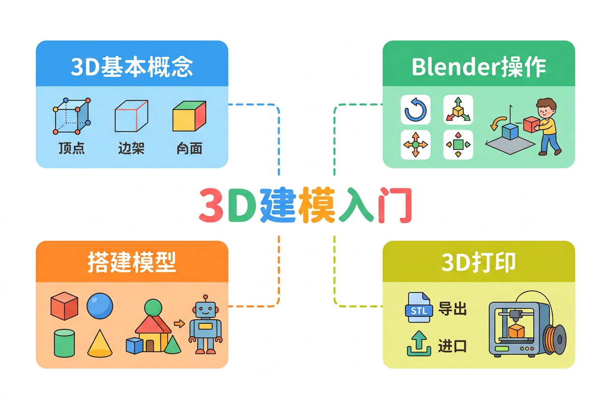
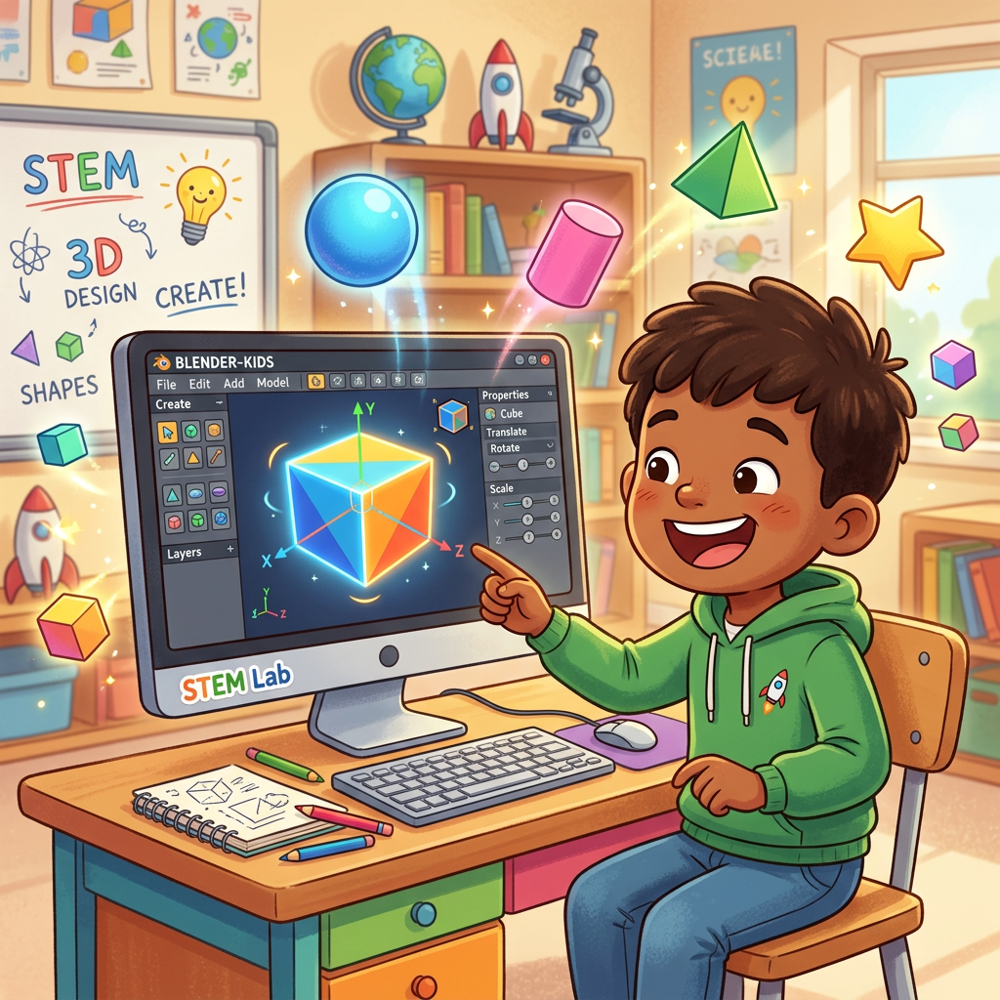
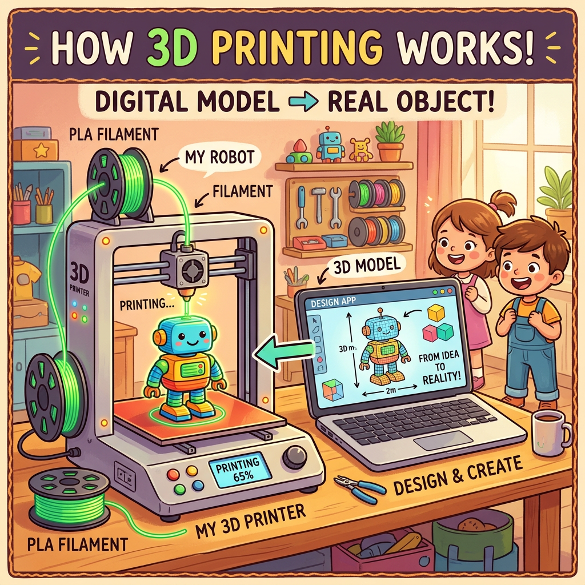

用 Blender 设计你的第一个 3D 打印模型，把想象变成可以摸到的真实物体！

完成本课件后，你将能够……
不用担心答错，试试看！先了解你已经知道什么。
❓ 问题1：3D中的"3D"是什么意思？
❓ 问题2：3D打印机需要什么格式的文件？
就像积木是由小零件组成的，任何3D物体都由三个基本元素组成！
在立方体上，找找顶点、边和面在哪里！立方体有8个顶点、12条边、6个面。
💡 看一看：点击各个按钮，观察立方体不同部分的高亮显示
打开Blender时会看到很多东西，但我们只需要认识三个最重要的区域！

在这里模拟练习！拖动来旋转视角，用滚轮缩放，点击按钮切换预设视角。
💡 拖动旋转 · 滚轮缩放 · 点击按钮切换预设视角
只需记住三个字母：G、R、S，你就能控制物体的位置、角度和大小！
点击下方按钮切换模式，然后在画布上拖动物体！
💡 当前：G·移动模式 · 拖动物体移动它
来看一段完整的建模演示动画！从空白场景到完成的3D模型，一步一步跟着看。
📝 视频后即时练习：在Blender中，添加一个新物体需要按哪个组合键？
设计好模型只是第一步！要让3D打印机能正确打印，还需要符合几条规则。

❓ 自测：如果你的模型有一个小破洞，打印时会有什么问题？
在下面的画板上，用积木式的方式设计你想3D打印的东西！可以是玩具、徽章、装饰品……
💡 点击画板放置形状 · 用不同颜色区分不同零件 · 像数字积木一样搭建模型！
太棒了！你已经完成了3D建模入门课。让我们回顾今天学到的知识！
顶点（点）、边（线）、面、网格——所有3D模型的基本组成元素。
3D视口是工作区；鼠标中键旋转、滚轮缩放；数字键切换视角。
G=移动、R=旋转、S=缩放。加X/Y/Z可以限制操作方向。
模型要封闭（无破洞）、壁厚≥1mm、尺寸合适、导出STL格式。
📝 综合后测：想让正方体变成长条形，应该怎么操作？
本课件在知识体系中的位置，以及相关联的学习内容